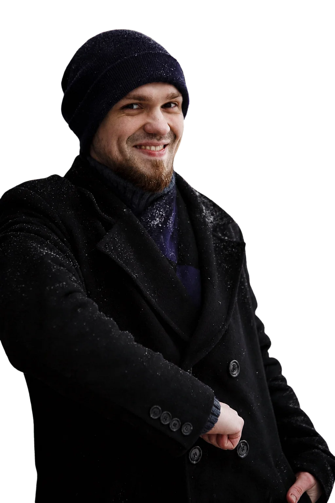
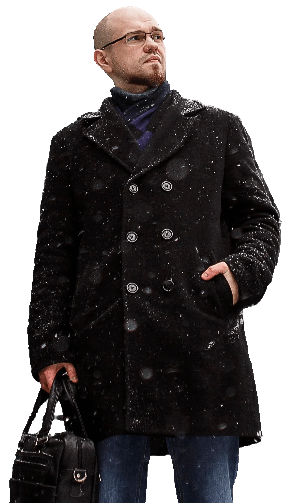

Продажи и прибыль
Показываю ценность вашего предложения и продумываю путь от первого визита до заявки или покупки.

Делаю лендинги, сайты услуг и интернет-магазины, которые приносят деньги.
Обсудить сайт1–3 дняна создание сайта
Без посредниковделаю сам с помощью ИИ
SEO в подарокдля Яндекса и Google
Что получает ваш бизнес
Показываю ценность вашего предложения и продумываю путь от первого визита до заявки или покупки.
Адаптирую сайт для телефонов, планшетов и компьютеров. Проверяю скорость загрузки, формы и переходы.
Настраиваю SEO для органического поиска Яндекса и Google. Готовлю посадочные страницы и цели под Яндекс Директ.
Сайты в разных нишах
Как может измениться цена заявки после запуска нового сайта
Создание, поддержка и продвижение сайтов

Обсудить сайтДелаю лендинги, многостраничные сайты и интернет-магазины. Продумываю структуру и запускаю сайт на вашем домене.
Слежу за работой сайта, обновляю контент и помогаю с доменом и хостингом.
Добавляю страницы и функции по мере роста бизнеса. Улучшаю дизайн, мобильную версию и путь клиента до заявки.
Исправляю сломанные ссылки, сбои форм и ошибки вёрстки. Проверяю работу сайта после правок.
Подключаю чаты, виджеты, формы и другие нужные инструменты. Проверяю, что они работают вместе с сайтом.
Развиваю страницы под запросы клиентов. Улучшаю структуру, заголовки и внутренние ссылки для поиска Яндекса и Google.
Добавляю карту сайта в Яндекс Вебмастер и Google Search Console. Проверяю статус страниц и исправляю технические ошибки.
Готовлю посадочные страницы, настраиваю кампании и цели в Метрике, чтобы видеть, какие объявления приводят заявки.
Напишите в любое время, если возникла проблема или нужна доработка. Отвечу и подскажу, с чего начать.
Пришлите ссылку на сайт. Покажу, что мешает посетителям оставлять заявки и покупать, и подскажу, что исправить.

Роман Улин
Я директолог. В контекстной рекламе с 2022 года. За это время поработал более чем со 130 проектами — от небольших лендингов до крупных интернет-магазинов.
Часто вижу, как сайт теряет заявки после клика по объявлению. Одни посетители уходят, пока страница грузится. Другие так и не понимают, что им предлагают и почему компании можно доверять.
Поэтому я начал сам делать сайты. Слежу за скоростью загрузки, помогаю ясно показать ваше предложение и упрощаю путь до заявки. Яндекс Директ остаётся моим основным направлением. Если нужно, настрою и буду вести рекламу для вашего сайта.
Обсудить сайт
Что нужно для старта
Обычно создаю сайт за 1–3 дня после согласования задачи и получения материалов. За это время можно собрать и многостраничный сайт. Стоимость и точный срок зависят от объёма и функций.
Да. Пришлите ссылку. Посмотрю, что можно улучшить в структуре, мобильной версии, скорости загрузки и формах. Например, в кейсе АвтоКая показываю форму оценки автомобиля с загрузкой фото.
Готовлю сайт к индексации в Яндексе и Google. Настраиваю заголовки, описания и карту сайта, проверяю, что поисковые роботы могут открыть нужные страницы, и исправляю найденные технические ошибки.
Расскажите об услуге или товаре, для кого вы работаете и что посетитель должен сделать на сайте. Для старта подойдут текущая страница, фотографии и примеры, которые вам нравятся.
Расскажите о бизнесе и задаче. Если сайт уже есть, пришлите ссылку.
Практика, наблюдения и честные заметки о сайтах и рекламе

Два сезона рекламы укладки плитки в Санкт-Петербурге и Ленинградской области: 327 конверсий по 1 889 ₽. Опыт работы с ТМК в услугах на небольшом бюджете.
Читать статью
Мой опыт использования Яндекс Пэй: категории кешбэка, обмен баллов на рубли и оплата из Сейва. Почему я перешёл с Райффайзена на карту Пэй.
Читать статью
Обновлённое расширение для Яндекс Директа: статусы обучения стратегий, массовые действия с кампаниями и чистка площадок по статистике.
Читать статью